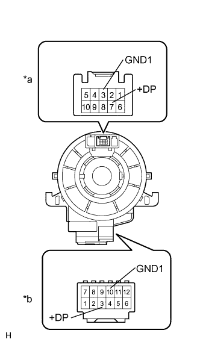
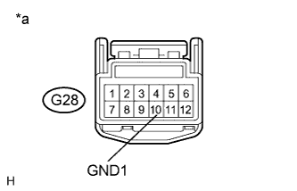
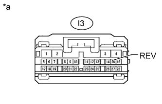

REAR VIEW MONITOR SYSTEM (w/ Side Monitor System) > "CHK" message(s) are displayed on the SIGNAL CHECK screen. |
| Item | Signal Input Method | Detail | DTC Output when Abnormal Result is Displayed | Signal Receiver |
| SPEED | CAN communication | Speed signal input | DTC is output | Master cylinder solenoid (Skid control ECU) |
| CAMERA SW | Vehicle wire harness | Steering pad switch assembly (wide view front and side monitor switch) signal input | DTC is not output | Steering pad switch assembly (wide view front and side monitor switch) |
| BCTY | CAN communication | Status of CAN communication with main body ECU | DTC is output | Main body ECU (Multiplex network body ECU) |
| MIRROR SW | CAN communication | Outer rear view mirror retract signal input | DTC is output | Main body ECU (Multiplex network body ECU) |
| SHIFT | Vehicle wire harness | Shift signal input | DTC is output | Park/neutral position switch assembly |
| STR SIG | CAN communication | Steering angle sensor signal input | DTC is output | Spiral with sensor cable sub-assembly |
| HANDLE | CAN communication | Steering position signal input | DTC is output | Main body ECU (Multiplex network body ECU) |
| BODY | CAN communication | Body size signal | DTC is output | Main body ECU (Multiplex network body ECU) |
| DEST | CAN communication | Destination information signal input | DTC is output | Main body ECU (Multiplex network body ECU) |
| MTM | - | Multi-terrain monitor signal | DTC is output | Individual setting |
| T/M | CAN communication | Transmission type signal | DTC is output | ECM |
| 1.CHECK DISPLAY CHECK MODE |
 |
Check which items display "CHK" (red) on the SIGNAL CHECK screen.
| Result | Proceed to |
| "CAMERA SW" displays "CHK" (red) | A |
| "SHIFT" displays "CHK" (red) | B |
| "MTM" displays "CHK" (red) | C |
| "SPEED", "BCTY", "MIRROR SW", "STR SIG", "HANDLE", "BODY", "DEST" or "T/M" displays "CHK" (red) | D |
|
| ||||
|
| ||||
|
| ||||
| A | |
| 2.INSPECT STEERING PAD SWITCH ASSEMBLY (WIDE VIEW FRONT AND SIDE MONITOR SWITCH) |
Remove the steering pad switch assembly (Click here).
| *a | Wide View Front and Side Monitor Switch | - | - |
Measure the resistance according to the value(s) in the table below.
| Tester Connection | Switch Condition | Specified Condition |
| 7 (+DP) - 3 (GND1) | Wide view front and side monitor switch pushed | Below 2.5 Ω |
| 7 (+DP) - 3 (GND1) | Wide view front and side monitor switch not pushed | 1 MΩ or higher |
|
| ||||
| OK | |
| 3.INSPECT SPIRAL WITH SENSOR CABLE SUB-ASSEMBLY |
|  |
Remove the spiral with sensor cable sub-assembly (Click here).
Measure the resistance according to the value(s) in the table below.
| Tester Connection | Condition | Specified Condition |
| 7 (+DP) - 3 (+DP) | Spiral cable is turned 2.5 rotations counterclockwise | Below 1 Ω |
| Spiral cable is centered | ||
| Spiral cable is turned 2.5 rotations clockwise | ||
| 3 (GND1) - 10 (GND1) | Spiral cable is turned 2.5 rotations counterclockwise | |
| Spiral cable is centered | ||
| Spiral cable is turned 2.5 rotations clockwise |
| *a | Steering Pad Switch Side |
| *b | Vehicle Side |
|
| ||||
| OK | |
| 4.CHECK HARNESS AND CONNECTOR (SPIRAL WITH SENSOR CABLE - BODY GROUND) |
|  |
Disconnect the G28 spiral with sensor cable sub-assembly connector.
Measure the resistance according to the value(s) in the table below.
| Tester Connection | Condition | Specified Condition |
| G28-10 (GND1) - Body ground | Always | Below 1 Ω |
| *a | Front view of wire harness connector (to Spiral with Sensor Cable Sub-assembly) |
|
| ||||
| OK | |
| 5.CHECK HARNESS AND CONNECTOR (SPIRAL WITH SENSOR CABLE - PARKING ASSIST ECU) |
Disconnect the G28 spiral with sensor cable sub-assembly connector.
Disconnect the I3 parking assist ECU connector.
Measure the resistance according to the value(s) in the table below.
| Tester Connection | Condition | Specified Condition |
| G28-3 (+DP) - I3-23 (BLSW) | Always | Below 1 Ω |
|
| ||||
| OK | ||
| ||
| 6.CHECK HARNESS AND CONNECTOR (SPIRAL WITH SENSOR CABLE - DRIVING SUPPORT SWITCH CONTROL ECU) |
Disconnect the G28 spiral with sensor cable sub-assembly connector.
Disconnect the G60 driving support switch control ECU connector.
Measure the resistance according to the value(s) in the table below.
| Tester Connection | Condition | Specified Condition |
| G28-10 (GND1) - G60-4 (SWI2) | Always | Below 1 Ω |
|
| ||||
| OK | |
| 7.REPLACE DRIVING SUPPORT SWITCH CONTROL ECU |
Replace the driving support switch control ECU with a new or normally functioning one (Click here).
Check that "CAMERA SW" displays "OK" on the SIGNAL CHECK screen.
|
| ||||
| OK | ||
| ||
| 8.CHECK PARKING ASSIST ECU |
|  |
Disconnect the I3 parking assist ECU connector.
Measure the voltage according to the value(s) in the table below.
| Tester Connection | Condition | Specified Condition |
| I3-15 (REV) - Body ground | Engine switch on (IG), shift lever in R | 11 to 14 V |
| I3-15 (REV) - Body ground | Engine switch on (IG), shift lever in any position except R | Below 1 V |
| *a | Front view of wire harness connector (to Parking Assist ECU) |
|
| ||||
| OK | ||
| ||
| 9.CHECK HARNESS AND CONNECTOR (PARKING ASSIST ECU - PARK/NEUTRAL POSITION SWITCH) |
Disconnect the I3 parking assist ECU connector.
Disconnect the C33 park/neutral position switch assembly connector.
Measure the resistance according to the value(s) in the table below.
| Tester Connection | Condition | Specified Condition |
| I3-15 (REV) - C33-1 (RL) | Always | Below 1 Ω |
| I3-15 (REV) - Body ground | Always | 10 kΩ or higher |
|
| ||||
| OK | ||
| ||
| 10.CHECK REAR VIEW MONITOR SYSTEM |
Check if the side monitor system or wide view front monitor system has the problem.
| Result | Proceed to |
| Side monitor system has problem | A |
| Wide view front monitor system has problem | B |
|
| ||||
| A | ||
| ||